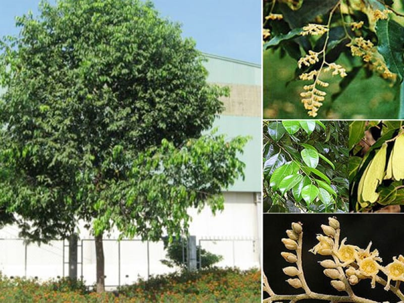

1. Đặc điểm hình thái
Cây gỗ lớn thân thẳng, thuôn dài, cao từ 20 – 30m. Thân cây có những lằn nứt dọc theo sớ, màu đen (lõi gỗ bên trong có màu hơi đỏ). Tán lá rậm hình chóp, cành nhánh to, dài, mọc thẳng đứng. Lá hình trái xoan, thuôn, đáy tròn và đỉnh nhọn ngắn. Lá dài 7 – 17 cm, rộng 5 – 9 cm. Mặt trên lá vàng và có màu xanh bóng, mặt dưới mịn. Gân chính rõ, với 7 – 10 đôi gân phụ. Các nách gân của đáy lá có các túm lông nhỏ. Hoa nhỏ mọc thành chùm khoảng 11 – 12 nhánh, mỗi nhánh có từ 4–6 hoa nhỏ màu trắng như hình ngôi sao. Quả có 2 cánh do lá dài và có lông rất mịn, dài 3–6 cm rộng 0,5–0,7 cm. Lúc non có màu xanh nhạt, lúc già có màu nâu.

2. Phân bố
Gặp ở hầu hết các tỉnh tử Quảng Nam trở vào, bao gồm: Kon Tum, Gia Lai (Hậu Bổn, Cheo Reo), Đắk Lắk, Lâm Đồng, Khánh Hoà, Ninh Thuận, Bình Thuận, Bình Phước, Bình Dương, Tây Ninh, Đồng Nai, Bà Rịa–Vũng Tàu, Thành phố Hồ Chí Minh, An Giang, Kiên Giang (Phú Quốc)... Tập trung nhất ở vùng Đông Nam Bộ và Nam Tây Nguyên.